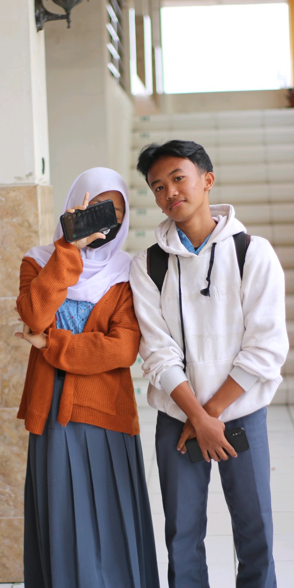
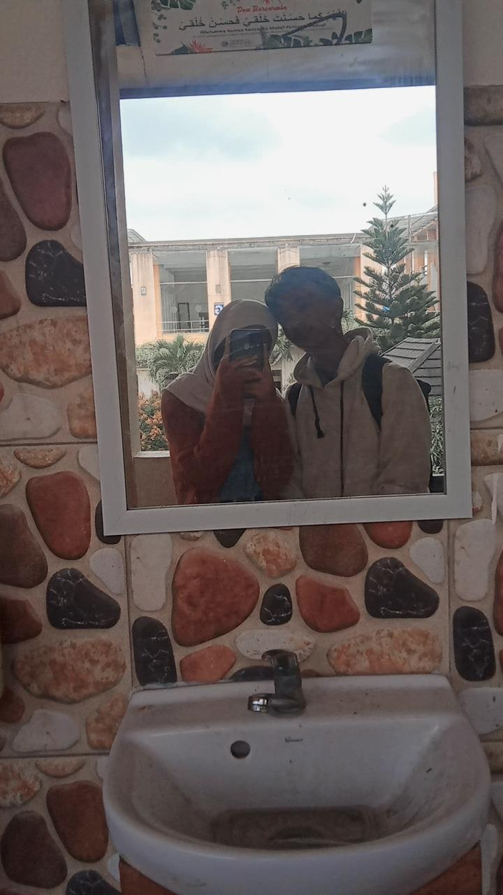

Note 1
Note khusus yang aku buat untuk kamu. Terima kasih sudah selalu ada dan menjadi bagian penting dalam hidupku. Semoga kita selalu bahagia bersama!



Untuk Kamu, Sayangku
Note khusus yang aku buat untuk kamu. Terima kasih sudah selalu ada dan menjadi bagian penting dalam hidupku. Semoga kita selalu bahagia bersama!
Hai semua! Aku mau ngenalin seseorang yang benar-benar aku sayang dan cintai setulus hati. Pada tanggal 30 Agustus 2022, aku menyimpan nomor dia, lalu kami mulai chat-an. Sebenarnya, kami sudah lama kenal, sejak SMP. Aku sebenarnya sudah suka sama dia sejak SMP, dan dia juga bilang suka sama aku, meski katanya cuma saat MPLS doang. Waktu SMP, dia pernah memfotoku dan mengirimkannya lewat WA, tapi dia lupa kalau dia nggak pernah memotoku, padahal aku ingat jelas foto itu.
Di SMP, kami sekolah selama tiga tahun, tapi dua tahunnya karena COVID-19, jadi lebih banyak online. Sebelum corona, dia sudah punya pacar sejak kelas 7. Aku mulai suka sama dia sejak MPLS hingga COVID-19 datang, dan kami jadi lost contact. Saat ketemu, dia seringkali sembunyi atau malu-malu, dan aku tahu itu. Kami benar-benar nggak ketemu selama masa COVID-19.
Tiba-tiba, waktu SMK, kami ketemu lagi! Meski beda jurusan, dia di Kimia dan aku di RPL. Dia harus sekolah 4 tahun, sedangkan aku 3 tahun, kasihan ya, haha. Aku dapat nomor WA-nya dari teman SMP yang satu kelas dengannya. Setelah beberapa minggu, aku kira dia nggak sekolah di SMK 13, tapi aku tahu itu dia saat pertama kali melihatnya waktu MPLS. Aku ingat betul, rasanya kayak salting banget bisa ketemu dia lagi. Waktu MPLS, aku nggak berani sapa dia langsung karena malu, jadi aku sapa temannya aja, hehe.
Setelah beberapa minggu, aku mulai akrab sama teman-teman sekelas dan lingkungan sekolah. Beberapa bulan kemudian, aku minta nomor WA-nya, dan tanggal 30 Agustus 2022, aku mulai chat dia. Chat-an kita kayak orang biasa, “Save Seno,” gitu aja. Aku tanya, “Kamu anak kelas berapa?” Terus dia jawab, “Aku kelas 3, kenapa?” Aku jawab, “Nggak apa-apa, nanya aja.” Dan dia pasti balas tanya balik ke aku.
Nah, terus kita kadang chat-an kadang enggak, paling sering balas SW . Kita sering nanyain kabar, rumah, dan yang lain-lain. Aku pernah coba bercanda ngajak pacaran, tapi langsung aku hapus, padahal aku mau banget. Aku suka jahilin dia, bahkan pernah dia pengen aku ngomong langsung depan kelasnya, tapi aku malu banget waktu itu.
Terus, aku belum pernah potbar sama cewek, dan dia nawarin mau potbar. Aku mau, tapi aku banyak alasan karena malu banget. Akhirnya enggak jadi-jadi deh, cuma omongan doang. Kita sering ngobrol soal eskul; dia ikut PMR, aku ikut badminton, saling nanya-nanya soal kegiatan masing-masing. Lalu, aku ngajak dia potbar, dan dia nanya kapan, mau upacara atau pagi aja biar fresh. Aku kasih banyak alasan lagi karena deg-degan.
Terus, aku ngajak dia nonton karena punya tiket buy 1 get 1, tapi lagi-lagi cuma wacana karena uangnya terpakai buat bayar yang lain. Maaf banget, cuma omongan doang. Sampai akhirnya, aku serius ngajak dia potbar. Aku chat dia dengan niat yang benar-benar serius. Tapi ternyata dia jawab, “Nggak dulu, gue udah punya cowo noo.” Aduh, rasanya nyesel banget! Jangan sampai terlambat melakukan sesuatu, itu pelajaran buat aku.
Setelah dia punya pacar, kita jarang chat, paling sebulan sekali, cuma nanya hal penting. Aku nggak mau ganggu hubungan orang. Dia pernah nanya soal bazar, dan aku kasih menu yang belum jadi. Waktu itu, saat pembagian rapot, dia bikin SW tentang peringkat di kelasnya, sedangkan aku cuma sampai peringkat 123. Libur panjang nggak ada chat-an, tapi pas masuk sekolah aku kangen banget sama dia.
Aku nggak tahu dia udah putus sama pacarnya karena selama libur nggak ada kabar. Tanggal 25 Januari, dia live IG, aku nonton sampai selesai. Aku chat dia, “Live lagi atu,” dan dia balas, “Live bareng atu?” Kita akhirnya live bareng pas pulang sekolah dan saat aku futsal. Seru banget, kita ngobrol sambil live bareng.
Setelah pulang futsal, kita masih chat-an, dia perhatian banget nanyain makan, mandi, ganti baju. Aku cerita semua tentang masa lalu, tentang orang lain yang dulu dekat sama aku, meski aku nggak suka sama orang itu. Ternyata, orang itu marah saat lihat aku live bareng dia, dan mulai ada masalah. Aku cerita semuanya ke dia, dan dia tetap dukung aku.
Kita mulai pacaran tanggal 27 Januari 2023. Kita sering chat-an kayak orang pacaran, tapi kadang aku nggak peka sama dia, sering tinggalin dia, bahkan waktu mau berangkat bareng aku malah pergi duluan. Aku sering nggak ngasih kabar, tapi dia tetap perhatian, kasih aku susu coklat, dan bahkan nge vidioin aku diam-diam saat ketemu aku di tangga.
Aku banyak banget salah sama dia, sering nggak peka dan ninggalin dia. Maafin aku ya, manis. Aku nggak mau lihat diriku yang dulu lagi. Pokoknya aku nyesel banget dan makasih banget buat kamu yang selalu sabar sama aku. Kamu yang terbaik!
Kita lanjut chat-an seperti biasa, kayak orang pacaran. Meski aku sering nggak peka, dia tetap sabar banget. Terus, besoknya, hari Selasa, tanggal 31 Januari, kita akhirnya potbar! Senang banget, ini pertama kalinya aku potbar sama cewek. Selama ini sering ngajak potbar tapi cuma omdo (omongan doang), akhirnya hari itu terkabul. Aku benar-benar senang bisa potbar sama kamu. Kamu wangi banget, tanganku sampai gemetar, deg-degan banget. Kita juga foto mirror, lucu banget, senang rasanya!
Dia juga beliin aku gantungan koala yang lucu banget, aku suka! Potbarnya pas hari Selasa, dan besoknya kita berangkat bareng subuh-subuh. Kasihan dia, pagi-pagi sudah harus berangkat, tapi aku suruh dia biar terbiasa bangun pagi. Kita foto mirror lagi, dan besoknya lagi, foto mirror lagi. Pokoknya senang banget!
Biasanya dia bangun jam 6, tapi demi berangkat bareng, dia jadi bangun pagi-pagi. Kita lanjut sekolah seperti biasa, pulang sendiri-sendiri dulu karena aku kadang belum bawa motor. Terus, seperti biasa, kita saling chat, nanyain kabar. Rasanya senang banget bisa menjalani hari-hari bareng kamu!
Ceritanya masi panjang yaa, semangatt yaa jangan bosen bosen sama akuu cerita kita masi panjang tauu aku sayang kamu Teruslah menjadi kamu yang apa adanya, karena itulah yang membuatku jatuh cinta. Aku berjanji akan selalu ada untukmu, di setiap senyum, tawa, dan bahkan air mata.
Let's create more beautiful memories together!
Kirim pesan